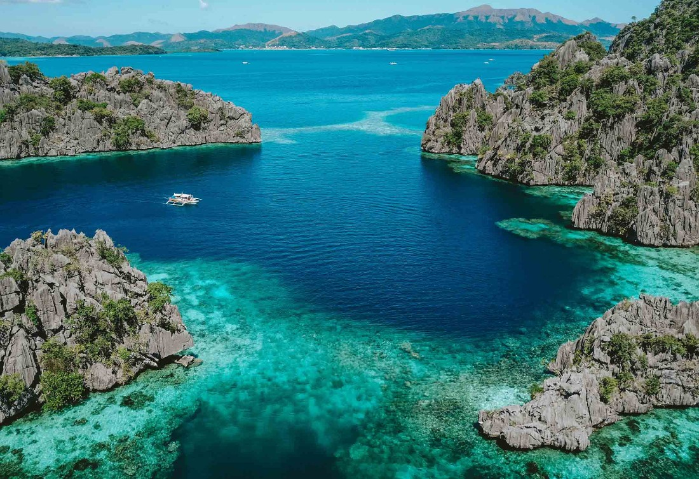

Coron
Coron is known for its dramatic limestone scenery and beautiful lagoons. It’s also popular for snorkeling and diving because the water is clear and full of marine life.


Coron is known for its dramatic limestone scenery and beautiful lagoons. It’s also popular for snorkeling and diving because the water is clear and full of marine life.